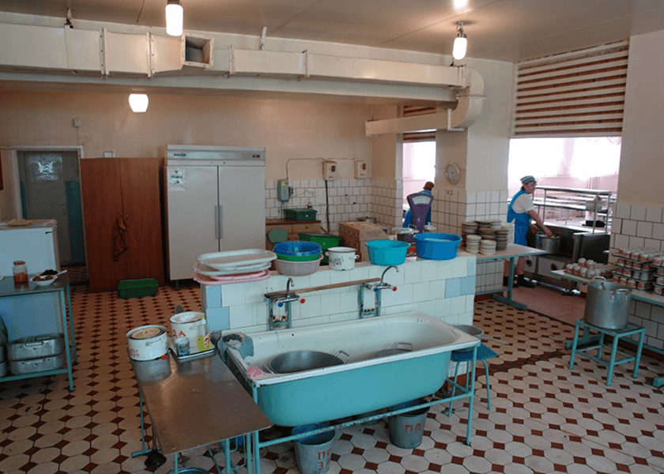
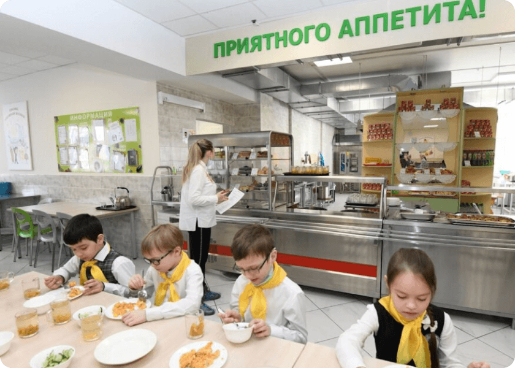
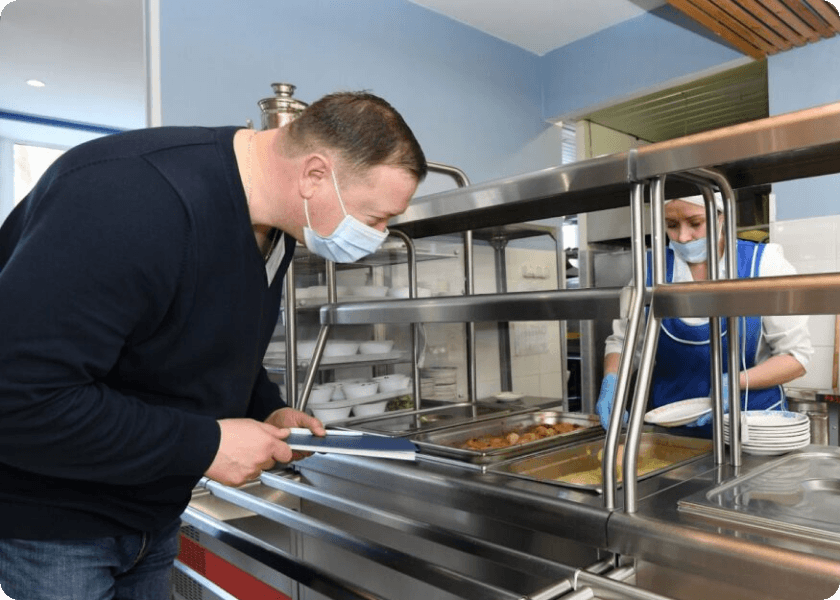
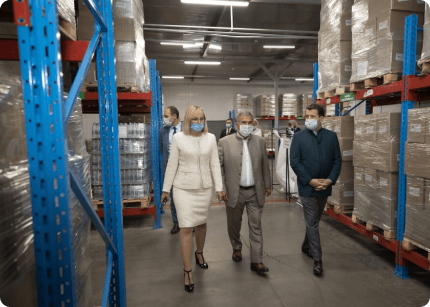
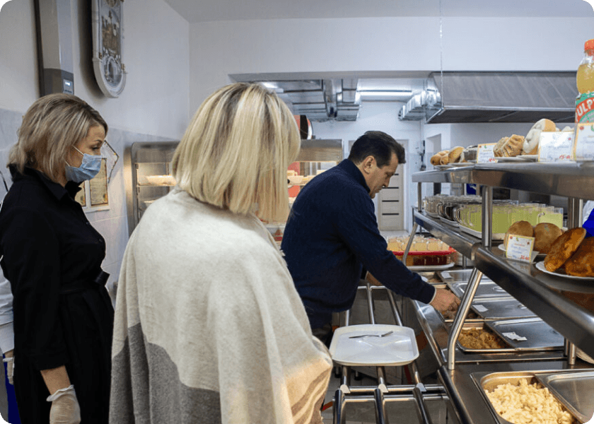
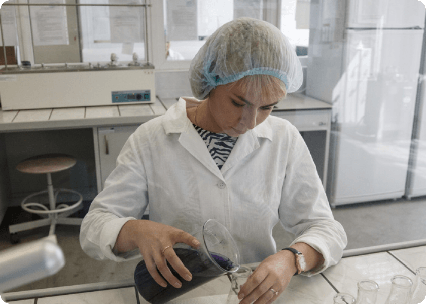
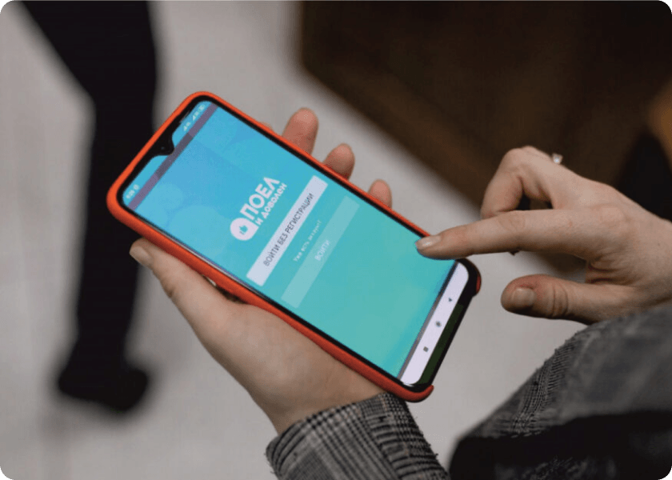
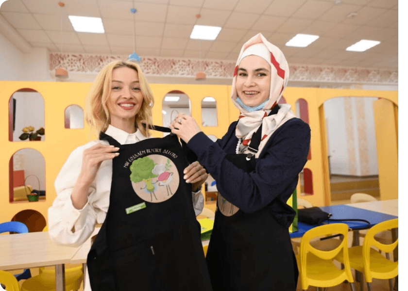
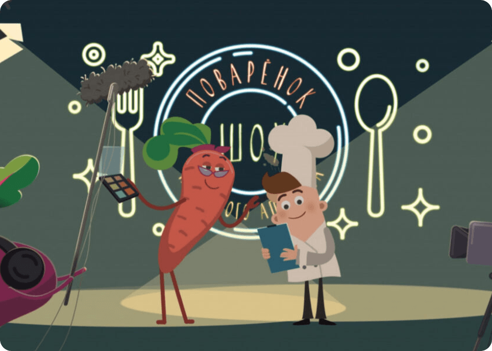

Модернизация школьного питания

Команда
Мэр Казани Ильсур Метшин Департамент продовольственного и социального питания города КазаниВ 2006 году питание в школах Казани было в плачевном состоянии, проблемы модернизации школьных столовых были характерны для большинства регионов России. Оборудование в большинстве школьных столовых было изношено. Нарушения технологического процесса приготовления пищи не позволяли обеспечить учащихся горячими блюдами, соответствующими санитарным правилам и нормам.

Ситуация
До 2006 года в Казани существовало несколько предприятий общественного питания, поставка продуктов в школы осуществлялась по разным ценам и разного качества.
Износ технологического оборудования школьных столовых составлял почти 80%. В некоторых столовых еда готовилась при отсутствии специальных цехов для переработки мяса и овощей, то есть с грубейшими нарушениями санитарных норм. Более 100 казанских школ не отвечали требованиям СанПиН и имели предписания Роспотребнадзора. В 2006 году в школьных столовых питались только 37% детей. Существовал большой разрыв между качеством питания учащихся с различным уровнем достатка.

Решение
У программы здорового питания для детей комплексный подход. С каждым годом реализации стратегии добавлялись новые обновления добавлялись.После запуска программы был сформирован Департамент продовольствия и социального питания, который занимается организацией питания в детских садах, школах, больницах, государственных и муниципальных учреждениях, крупных международных мероприятий.
Изначально было принято решение о внедрении технологии приготовления пищи Cook & Chill, при которой блюда (мясо, рыба, птица) и сложные гарниры готовятся на пищекомбинате в ночное время, а затем в короткие сроки охлаждаются в упаковке до +2–4 градусов.
Утром охлажденная еда отправляется спецтранспортом по заявкам школ, где непосредственно перед перерывом повара разогревают поступившую охлажденную продукцию. Под новую технологию приготовления пищи были реконструированы три заготовительных цеха.

В том же 2006 году началась замена устаревшего оборудования школьных столовых.
Во всех школах введено единое школьное меню с единой стоимостью, что разнообразило рацион школьников и сбалансировало его по белкам, жирам, углеводам, витаминам и минеральным веществам с учетом возрастных особенностей детей и подростков.
С начала действия программы из бюджета ежегодно выделяются средства на питание учащихся из малообеспеченных семей — 18% детей питаются в школах бесплатно.

В 2008 году в систему логистики были внесены изменения. Для хранения сырья и продуктов питания на территории Департамента была организована сертифицированная система складских помещений и холодильного оборудования. Мощность обновленной системы позволяют поддерживать двухнедельный запас продовольствия и сырья.
Было принято решение о централизованном закупе продукции — 40 000 тонн в год. Это решение позволило работать с крупнейшими производителями, что дало возможность снизить затраты на закупку и гарантию качества.
В том же году ведомство закупило 58 автомобилей для оперативной доставки продукции.

В 2012 году, впервые в России, в казанских школах начала действовать система безналичных расчетов «Образовательная карта». Данной картой дети могут оплачивать питание в столовых, что значительно сокращает время обслуживания, а у родителей появилась возможность получать информацию о состоянии счета и о том, что ребенок сегодня съел.
Со временем была добавлена система «Предварительный заказ», которая позволяет старшеклассникам заказывать школьное меню за несколько дней вперед, исходя из собственных вкусовых предпочтений.
Был запущен проект «Школьный ресторан», в ходе реализации которого школьные столовые постепенно преображаются. Характерной чертой ремонта является яркий дизайн, эргономичная мебель, современные элементы декора, увеличение посадочных мест.

В 2013 году в рамках наследия Всемирной летней универсиады в состав пищевого комбината был передан отдел питания с современным оборудованием и технологической лабораторией. В лаборатории осуществляется тщательный контроль сырья и продукции.
В 2016 году было разработано мобильное приложение «Поел и доволен» для учащихся 5-11 классов для повышения качества организации питания в школах города Казани.

Приложение позволяет:
- Оценивать блюда дня;
- Голосовать за новые блюда, которые появляются в школьном меню;
- Оценивать школьную столовую по общим критериям один раз в месяц и по конкретным критериям — ежедневно;
- Отслеживать рейтинг школ на основе отзывов самих учеников;
- Контролировать остаток средств на счете банковской карты;
- Стать участником программы лояльности, чтобы использовать накопленные баллы в школьной столовой.

В 2018 году стартовал проект «Мама в теме», объединивший активных мам-блогеров и неравнодушных родителей (охват аудитории более 1 млн человек), которые считают, что родители могут повлиять на школьное питание и сделать его лучше. Заседания проводятся регулярно один раз в два месяца.
С января 2019 года в рамках проекта «Родительский контроль» посещения родителей стали ежедневными во всех школах города. Кроме того, журнал стал вестись в электронном виде, что позволило оперативно реагировать на поступающие запросы.
Летом 2019 года была проведена масштабная реконструкция столовых и модернизация пищеблоков сразу в 36 школах Казани.
Общий инвестиционный бюджет составил 260 млн рублей, в том числе 170 млн за счет города. В рамках наследия WorldSkills-2019 80 казанских школ получили 550 единиц оборудования и инвентаря на общую сумму 5,2 млн рублей и электростанцию, крупногабаритное промышленное оборудование на общую сумму 55 млн рублей.

К началу 2020-2021 учебного года для пищекомбината было закуплено технологическое и холодильное оборудование, увеличены и утеплены участки комплектования, разгрузки и погрузки продукции. В связи с эпидемиологической обстановкой для школ также были закуплены бактерицидные лампы, средства индивидуальной защиты, моющие и дезинфицирующие средства, хозяйственные товары. Для самых маленьких были разработаны серии мультфильмов и караоке «Поварёнок шоу», которые транслируются на классных часах в школах. «Поваренок-шоу» — это развлекательный формат воздействия на формирование привычек здорового питания школьников.
В июне 2021 года в Казани прошел международный форум «Здоровые города. Здоровое питание детям». Он стал первым Евразийским региональным форумом Миланского пакта, координационный совет которого возглавила столица Татарстана.
В форуме приняли участие около тысячи человек: российские и зарубежные эксперты, мэры городов, представители сферы здравоохранения и здорового питания, руководители общественных организаций.
Программа форума была представлена в трех различных форматах:
- городской семейный отдых;
- международный форум в гибридном формате;
- экскурсия в продовольственный отдел.
Таймлайн
-
2019
- Стартовал второй этап проекта «Школьный ресторан»: капитально отремонтированы 36 школьных столовых;
- Стартовал проект «Журнал родительского контроля»: родители могут посетить обеденный за и продегустировать блюда;
- Стартовал проект «Мама в теме».
- Награды Миланского пакта в Италии за устойчивое и здоровое питание;
- Tehran Golden Adobe Global Award в Тегеране в номинации «Развитие, планирование и управление местного самоуправления»;
- Участие в Международном консультативном совете Продовольственной и сельскохозяйственной организации в Риме.
-
2020
- В период пандемии COVID-19 департамент питания организовал питание в инфекционных отделениях больниц города (в одноразовой посуде), питание сотрудников полиции на блок — постах (в специальных термосах);
- Решением мэра Казани в период дистанционного обучения школьники из льготных категорий обеспечены продуктовыми наборами;
- В рамках федеральной программы по обеспечению бесплатным питанием школьников начальных классов организовано питание 70 тысяч учеников;
- Казанская программа «Здоровое питание детям» заняла 1 место в конкурсе «Здоровые города России» в номинации «Лучшая программа здорового питания».
-
2021
- 43 школьные столовые отремонтированы в рамках проекта «Школьный ресторан»;
- По инициативе мэра Казани посещения в рамках проекта «Журнал родительского контроля» стали ежедневными;
- Журнал родительского контроля стал электронным, что позволило оперативно реагировать на замечания;
- В 2021-2022 учебном году родители оставили в журнале 15 тысяч записей, из них 98,5% положительные;
- В Казани прошел международный форум «Здоровые города. Здоровое питание детям».
-
2022
- 30 школьных столовых отремонтировано в рамках проекта «Школьный ресторан»;
- Организовано горячее питание для мобилизованных горожан на сборных пунктах;
- Дети мобилизованных граждан с 1 по 11 класс получают бесплатное горячее питание за счет городского бюджета;
- Модернизированы складские помещения департамента питания: объем хранения вырос на 45 тонн;
- Модернизирована производственная площадка «Юрюзань»: теперь здесь готовят блюда для сети здравоохранения.
-
2023
- 19 школьных столовых отремонтировано в рамках проекта «Школьный ресторан».
-
2024
- 17 пищеблоков отремонтировано в рамках проекта «Школьный ресторан».
-
2025
- 12 пищеблоков отремонтировано в рамках проекта «Школьный ресторан»;
- 189 школьных столовых отремонтированы с 2014 года;
- Всего в формате школьного ресторана работает 197 школьных столовых.